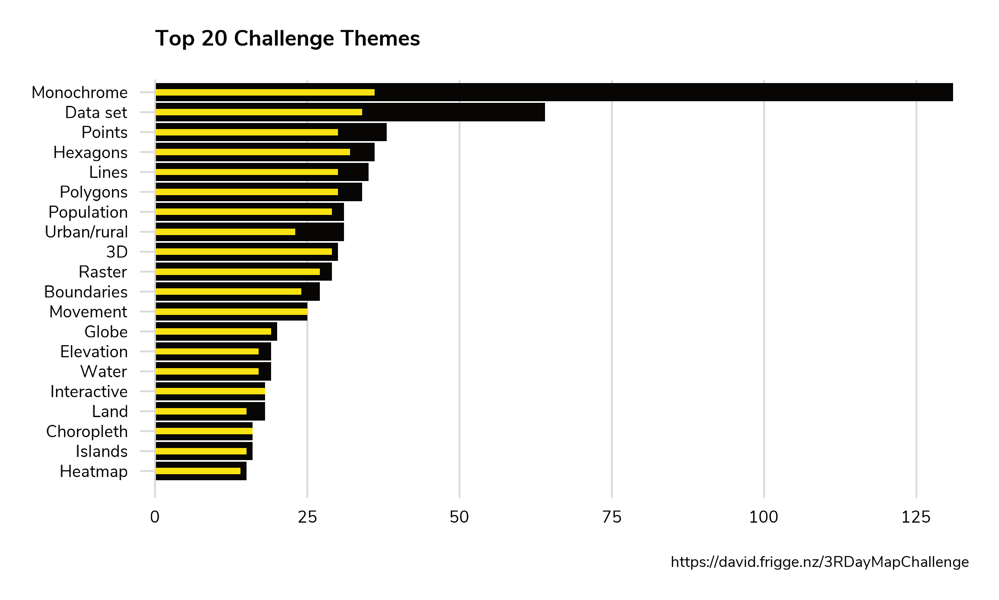
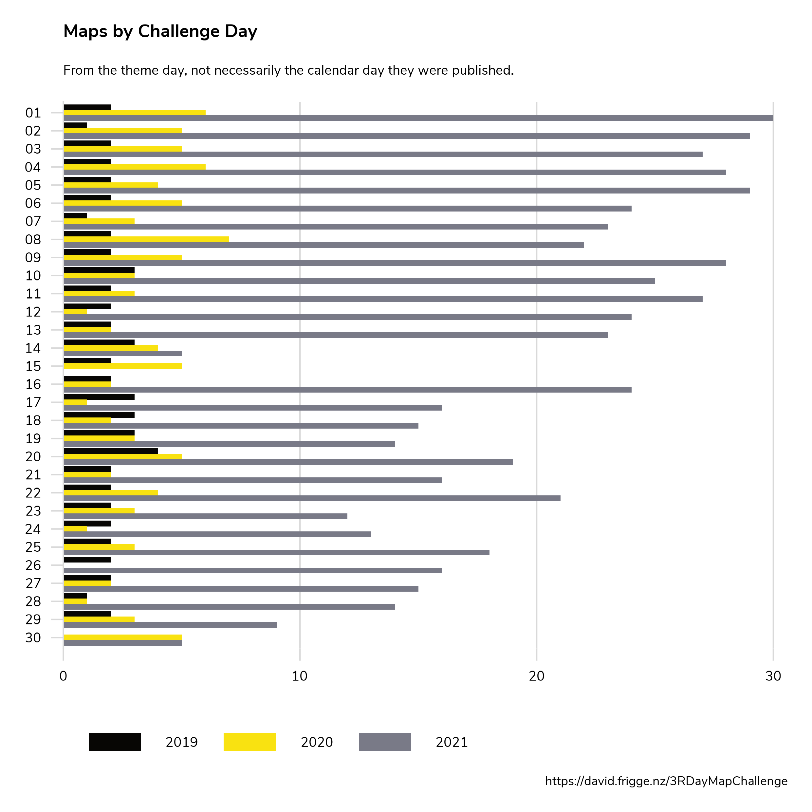
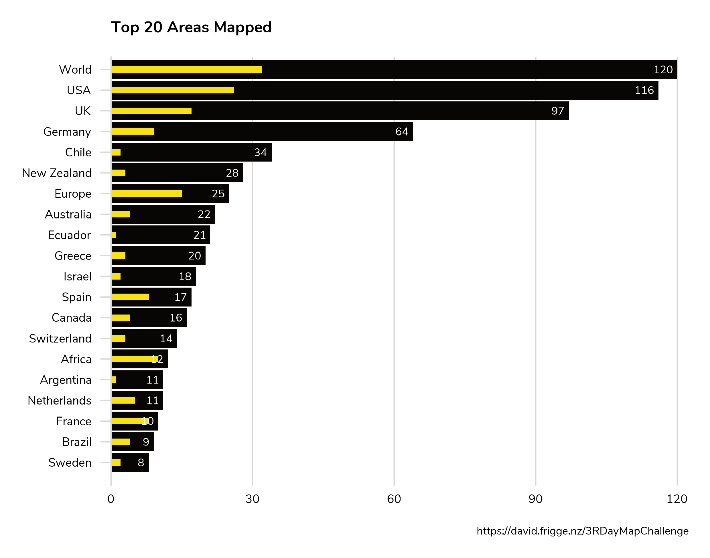
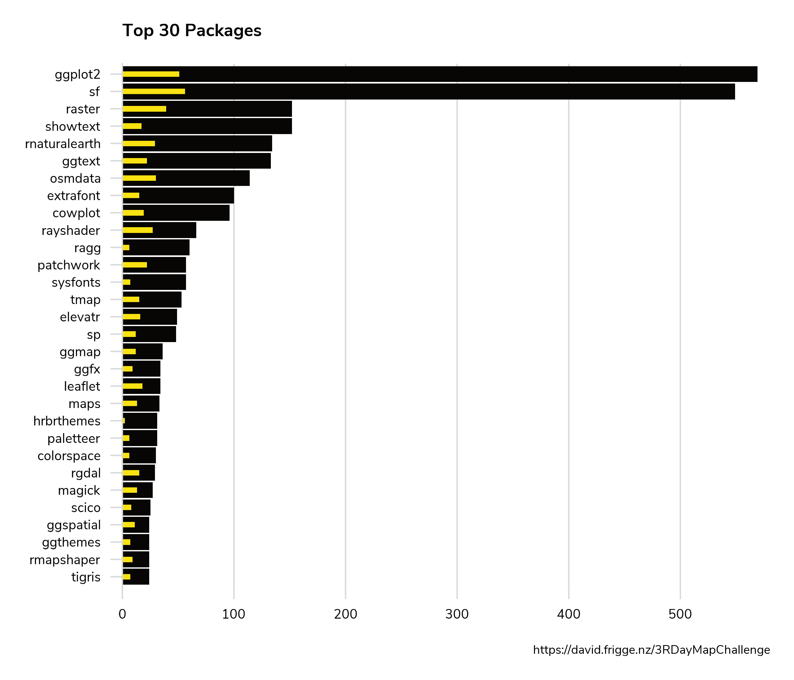

This gallery has 734 maps by 62 cartographers in total. From 2019, there are 62 maps by 3 people; from 2020, there are 101 maps by 10 people; from 2021, there are 571 maps by 60 people.
This gallery exists because of the generosity of people sharing their code. Here are the top 30 cartographers in the gallery. Of course, this gives no indication of how many maps they made without R!
These are the top 20 of the 44 meta-themes. Monochrome's supremacy is unsurprising, as it includes 4-5 days each year. The main bar is the total number of maps and the smaller bar is the number of individual cartographers.
How many maps do we have for each day? (Remember that some days are suggested not to use R!)
This gallery is mostly about technique over content, but it's interesting to see the most popular areas mapped. These are taken from the first tag assigned, which is generally the main country/continent. The main bar is the total number of maps and the smaller bar is the number of individual cartographers.
The most popular packages recorded, excluding the meta tidyverse. The main bar is the total number of maps and the smaller bar is the number of individual cartographers.
